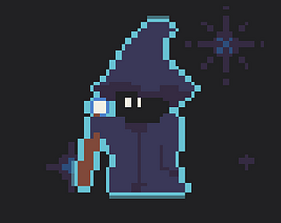

Overview
Game submission for GameMaker's Toolkit Game Jam 2022. For 3 days, I Collaborated with a friend on Unity in developing Manascape(Mana + Escape) while using Git and GitHub for version control. Using C#, I programmed the core gameplay mechanics and scene management system.
The gameplay consists of (1)moving the player around the screen with slippery properties, (2)colliding with items such as health potions to heal or mana points to collect enough of them and create an "exit" portal to beat the game, (3)entering "normal" portals to move onto the next area before time runs out within the current area, and (4)avoiding enemies that try to collide with the player which would cause a loss of health and drop some of the player's mana.
itch.io page

The player movement script uses Rigidbody 2D physics and the new Unity Input system where the player would provide a vector value, via key press, which is then used to calculate a desired velocity which in turn moves the player sprite with a given speed and acceleration. The slippery movement is in effect when the player provides a different vector value; the current velocity would then change/lerp to the newly calculated velocity.
Mana points and health potions have 2D collider components that are used in collision detections with the player, where object-specific methods are triggered using the built in "OnTriggerEnter2D" methods. Colliding with mana points increases the number of mana the player has by 1 and colliding with health potions increases the player's health up 1. In addition, if the player collects enough mana points, they can an "exit" portal object via another key press which upon entering/colliding will take the player to victory screen and, in turn, beat the game.
Each area within the game has a set amount of mana points that can be collected as well as a "normal" portal that spawns after a given amount of time has passed. The area itself also has a timer where the walls of the screen begin to close in towards the center. If the timer would reach 0 then the player would be trapped in the area forever and lose the game. Entering the "normal" portals is the only way to move onto the next areas where the player can collect more mana points with the added risk of encountering enemies.